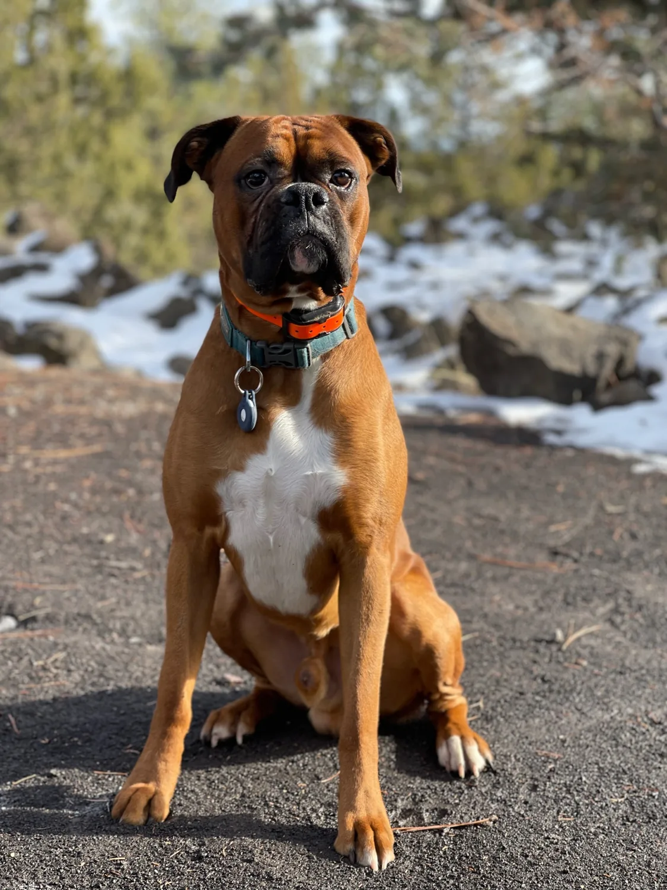
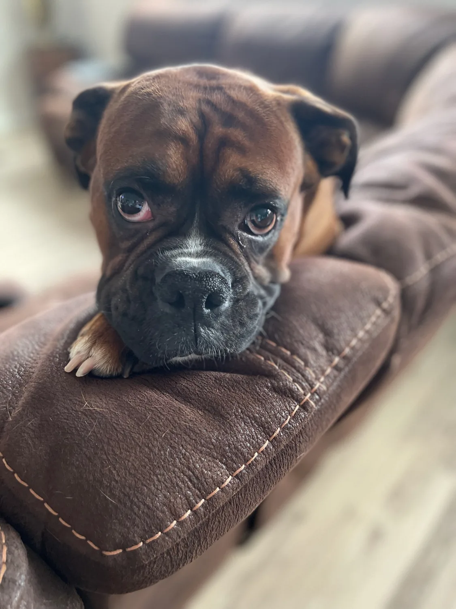

German beginnings.
The modern Boxer developed in Germany in the late 19th century, with the Bullenbeisser among its ancestors.
THE DOG. THE LEGEND. THE VERY GOOD BOY.
A big personality. A face you can't resist.
Welcome to Archer's little corner of the world.

A LIFE IN SNAPSHOTS
From tiny paws to big adventures.
Ten photos. One unmistakable Archer.
A LITTLE BREED BRAGGING
There's plenty to love about the breed behind that expressive face. These are Boxer breed traits; every dog has a personality of their own.
The modern Boxer developed in Germany in the late 19th century, with the Bullenbeisser among its ancestors.
Boxers are known for a playful temperament with family and friends. That athletic appearance comes with a fun side.
Both the American and Royal Kennel Clubs place Boxers in their Working Group. The breed combines strength, agility, and companionship.
A square build, a short coat, and a broad muzzle are hallmarks of the Boxer. Those expressive faces are hard to forget.
Breed reading: American Kennel Club · Royal Kennel Club · Canadian Kennel Club

NO WORDS REQUIRED
LEAVE A LITTLE PAW PRINT
Have a question about the great one?
Here's a place to say hello.